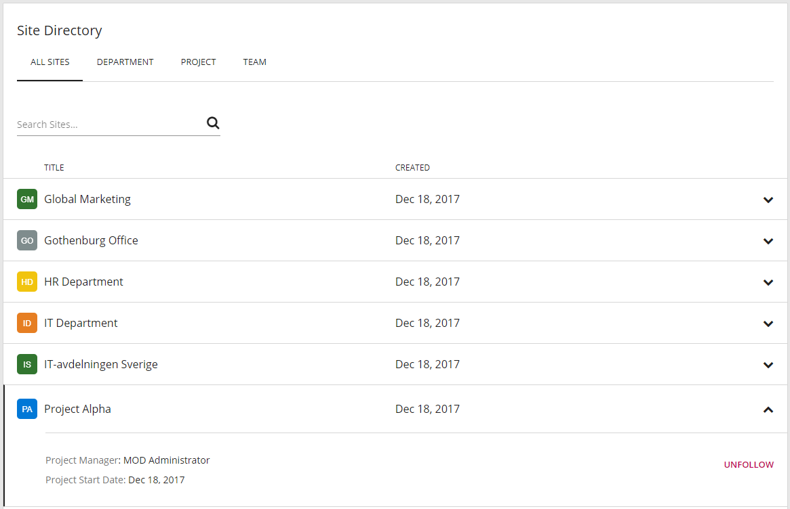
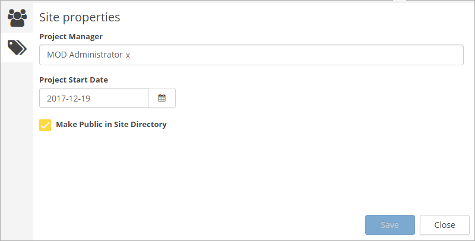
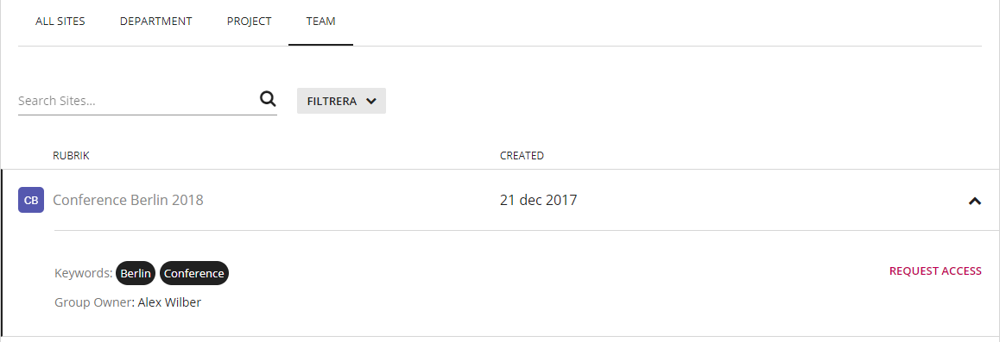

Omnia Foundation - December 2017
New Features
Improved Site Directory
The Site Directory has been updated to align with the new graphcial design. The following features have also been added:
- Possibility to find Office 365 groups (if feature "Omnia Team Site - Prerequisites" is activated on site level).
- Possibility to configure which site templates to include in the Site Directory. Each site template will be presented as an individual tab with filters.
- Possibility to Follow/Unfollow sites in the Site Directory.

A new feature has been added to give site administrators the possibility to decide whether the site should be public or not in the Site Directory.

If the site is public in the site directory, a user without access to the site will be able to view it in the Site Directory and Request Access to the site.

Improved Tutorial
The content editor is now supported when creating tutorials. The positioning of tutorial step tooltips have also been improved.
Bug Fixes
- When a user followed to many sites, the My Sites navigation became empty.
- A tutorial could lock the screen.
- Tutorials could not be loaded on legacy SharePoint pages.
- The "Create New Site" button in My Sites was not showing the correct localized label in a multi-lingual environment.
- Announcements was sorted in a wrong way in the notification panel if no expiry date was set on some of the announcements.
- The image picker got very slow when having many images in the library.
December 2017 Patch 1 (1.0.9024)
- Localization issue in Site Directory
December 2017 Patch 2 (1.0.9122)
- PreferredName is now used instead of Title in People tab in Quick Search.
- Fixed issue with some links in My Sites going to the start page instead of the team site.
- Fixed issues with Script/HTML block in IE 11 and Edge.
- Change how site titles are truncated in My Sites.
December 2017 Patch 3 (1.0.9257)
- Fixed issue with SharePoint 2013 and compatibility mode in IE.
- Exclude omnia-sitedirectory.txt file from quick search.
- Fixed issue with Site Properties in newly created Office 365 groups.
- Fixed Query Limit issue in Site Directory.